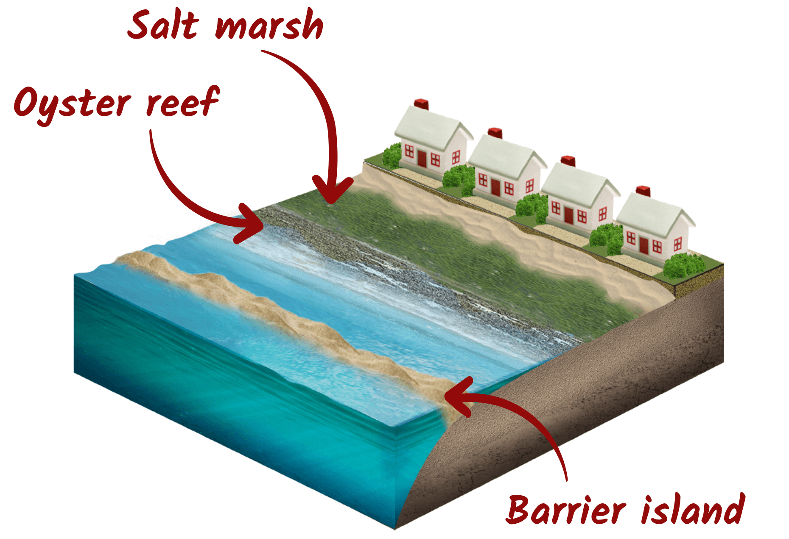
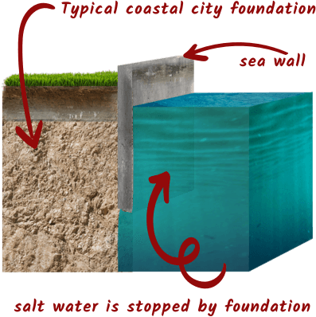

While sea level rise is a serious challenge, there are ways to reduce its impact. Reduce greenhouse gas emissions Use renewable energy Reduce fossil fuel use Improve energy efficiency Protect coastal areas Build sea walls and flood barriers Restore wetlands and mangroves Improve coastal planning Take action as individuals Save energy at home Use public transport, walk, or cycle Recycle and reduce waste Support environmental initiatives Working together can help slow climate change and protect vulnerable communities.